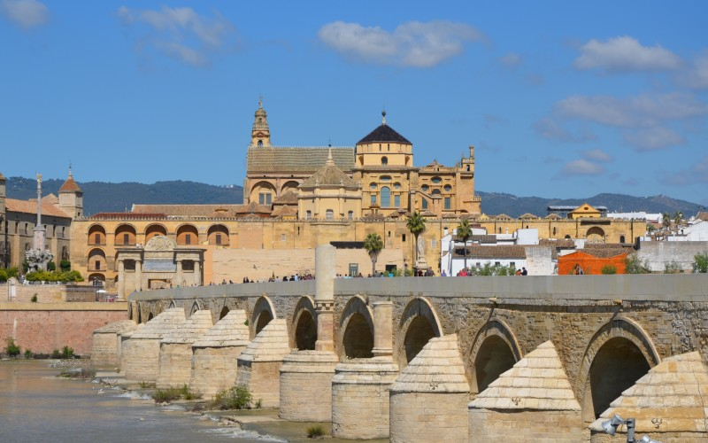

Casco Histórico
El centro histórico de Córdoba es uno de los cascos antiguos más grandes de Europa. En 1984, la Unesco declaró a la mezquita-catedral de Córdoba como Patrimonio de la Humanidad. Más tarde, en 1994, la Unesco expandió esta denominación a gran parte del casco antiguo. El centro histórico posee una gran riqueza monumental conservando grandes vestigios de la época romana, árabe y cristiana.Los elementos de borde que definen la delimitación del conjunto histórico de Córdoba están formados por las vías de comunicación que coinciden con la antigua muralla, lo que en gran medida ha salvaguardado el centro histórico de los ensanches urbanísticos de finales del siglo XIX y principios del XX, pues éstos transcurren por el perímetro del mismo (avenida Conde Vallellano, Paseo de la Victoria, Ronda de los Tejares, avenida de las Ollerías), creándose así un anillo de espacios libres que protege al Conjunto Histórico de Córdoba.
Historia
Tras la caída del Califato, ya a principios del siglo XI, Córdoba entra en decadencia política, aunque no cultural. En 1236, el rey Fernando III de Castilla conquista la ciudad, que jugaría desde entonces un papel trascendental en las luchas contra el Reino nazarí de Granada y se convertiría por ello en residencia habitual de los reyes de Castilla. En el siglo XVII Córdoba se sumerge en una profunda crisis que incide negativamente en el desarrollo de la ciudad. En el siglo XVIII se asistirá a una recuperación y cobrará impulso la renovación urbana, si bien en la segunda mitad de esta centuria se llevarán a cabo algunas actuaciones negativas, como la ruptura de la muralla medieval, que vaticinan la vocación destructiva del siglo XIX. El notable crecimiento demográfico del siglo XX potenció el nacimiento de nuevos barrios, que a partir de la segunda década del siglo han ido rodeando la ciudad.
